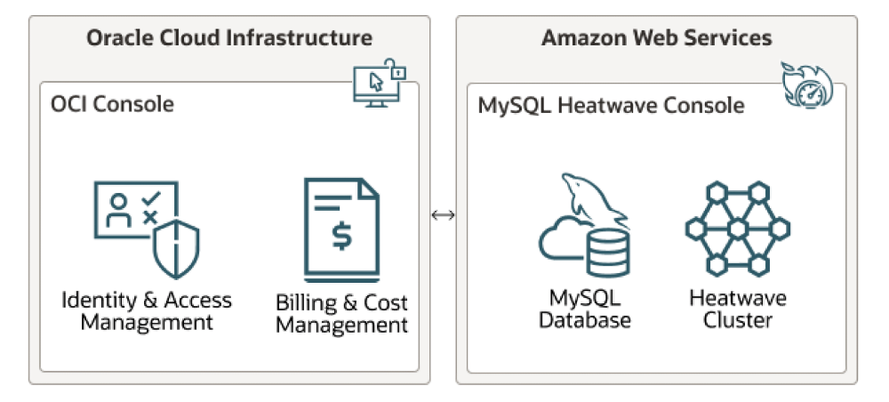
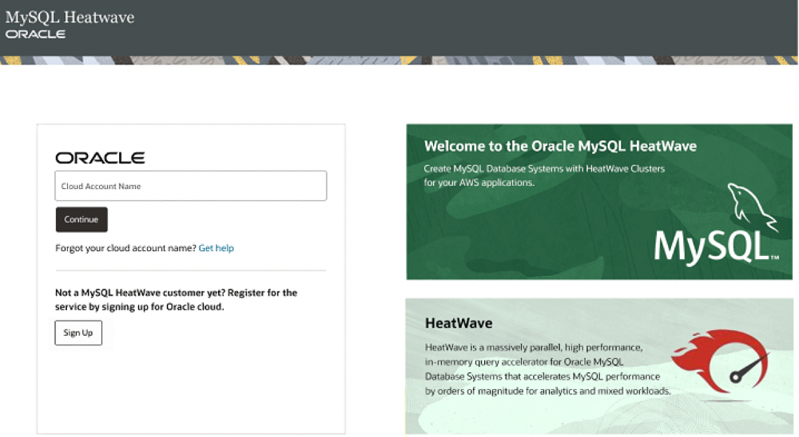
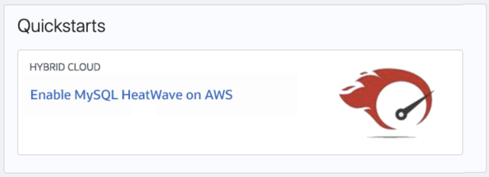
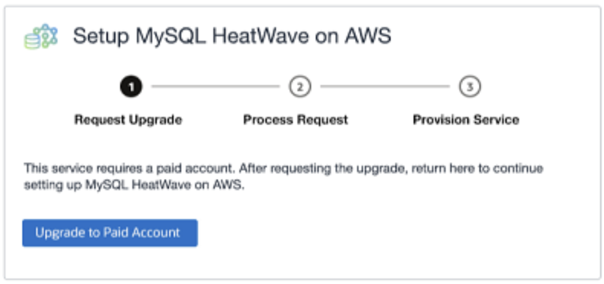
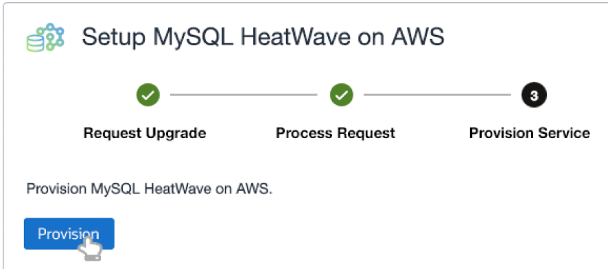
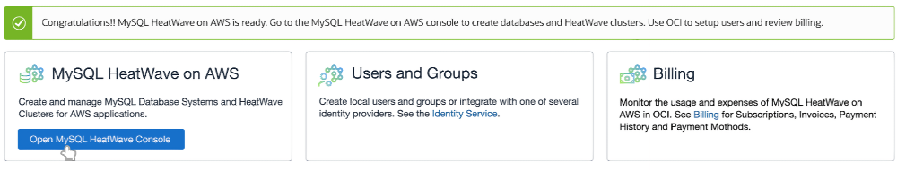
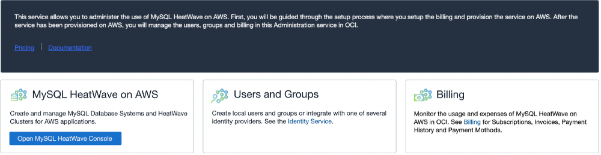
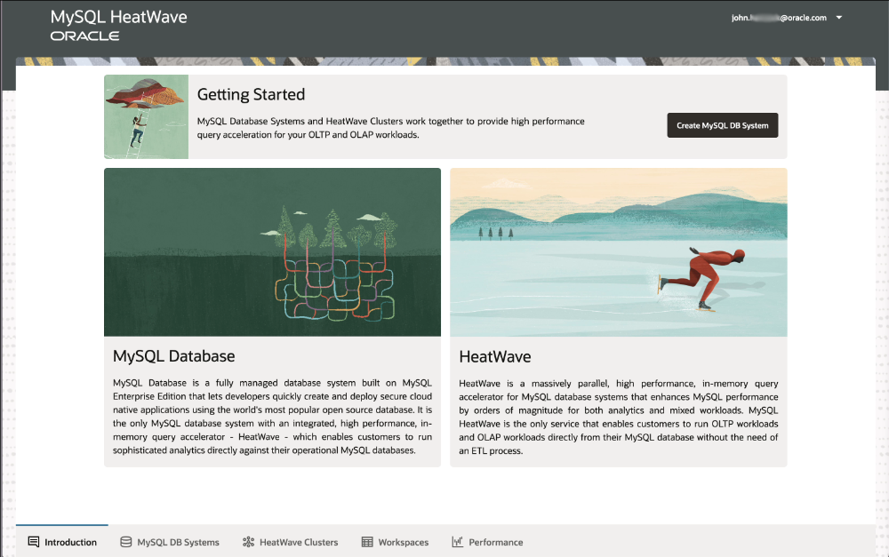

<div class="initial-content">
  <div id="main" role="main">

  <article class="page has-sidebar" itemscope itemtype="https://schema.org/CreativeWork">
    <meta itemprop="headline" content="Connecting To and Managing HeatWave on AWS">
    
    <meta itemprop="datePublished" content="2022-06-16T17:00:00+00:00">
    


    <header>
      <h1 id="page-title" class="page__title" itemprop="headline">Connecting To and Managing HeatWave on AWS
</h1>
      


    </header>

    <section class="page__content" itemprop="text">
      

        <p>It’s a multi-cloud world today, and that’s why MySQL HeatWave for Amazon Web Service gives you a massively parallel, high performance, in-memory query accelerator for the MySQL Database Service as a fully managed service, developed and supported by the MySQL team in Oracle. This accelerates MySQL performance by orders of magnitude for combined analytics and transactional workloads (OLAP and OLTP).</p>

<picture class="">
                <source srcset="assets/networkdiagram-hwaws-oci-devrel0622a.png 1x" />
                
            </picture>

<p>Oracle designed this so developers can focus on the important things, like managing data, creating schemas, and providing highly-available applications. Oracle automates tasks such as backup, recovery, and database and operating system patching.</p>

<p>If you’ve never heard of HeatWave, think of it as a database query accelerator with boost buttons. One of the incredible things about Oracle MySQL HeatWave is the ability to <a href="https://www.oracle.com/mysql/heatwave/">run analytics</a> directly against your existing transactional data, so there’s no need to shuffle that data off to a separate system when you need to perform massively parallel analysis.</p>

<p>Let’s get started!</p>

<p>MySQL HeatWave on AWS resides in an Oracle-managed tenancy on AWS. You can access it from the browser-based HeatWave Console or from a MySQL client or application. For this article, we’ll just dip our toe in by signing in, provisioning the service, and seeing an overview of what the HeatWave Console offers.</p>

<h2 id="prerequisites">Prerequisites</h2>

<p>The MySQL HeatWave Console supports browser platforms supported by Oracle Jet, such as the following browsers and versions:</p>

<ul>
  <li>Google Chrome 69 or later</li>
  <li>Safari 12.1 or later</li>
  <li>Firefox 62 or later</li>
  <li>The Console does not support Firefox Private Browsing.</li>
</ul>

<p>You’ll also need an AWS account, optionally an OCI account as well.</p>

<p>Plus, you’ll need a DB System somewhere to connect to the HeatWave instance (this could be a HeatWave cluster in an OCI tenancy, for example).</p>

<h2 id="signing-up">Signing Up</h2>

<p>To sign up for MySQL HeatWave on AWS (if you don’t have an Oracle account):</p>

<ol>
  <li>Navigate your browser to <a href="http://cloud.mysql.com/">http://cloud.mysql.com/</a>. You are taken to the MySQL HeatWave on AWS welcome page.</li>
  <li>Click Sign Up. A field is displayed for entering your email address.</li>
  <li>Enter your email address and click Continue.
    <picture class="">
             <source srcset="assets/welcome2-mysqlhw-signup-actname-devrel0622a.png 1x" />
             
         </picture>
    <p>You are directed to an Account Information page for creating an Oracle Cloud account, which is required to use MySQL HeatWave on AWS.</p>
    <blockquote class="notice">
      <p><strong>NOTE:</strong> Do NOT change your Oracle Cloud Account name after provisioning the MySQL HeatWave on AWS service, as it can cause a loss of access to the MySQL HeatWave on AWS service, requiring Support assistance.</p>
    </blockquote>
  </li>
  <li>Enter the required information and click Verify my email. A verification email is sent to the specified address. This may take a minute!</li>
  <li>In the verification email, click on the verification link.
 You are directed to a page for verifying the email address and providing initial account information. Follow the prompts. After providing the initial account information, you’ll go to a Get Started page in the Oracle Cloud Infrastructure (OCI) Console, which includes an Enable MySQL HeatWave on AWS link in the Quickstarts section of the page.</li>
  <li>Click Enable MySQL HeatWave on AWS.<br />
You are directed to a MySQL HeatWave on AWS Administration page where you are presented with a dialog that guides you through the setup process.
    <picture class="">
             <source srcset="assets/hwaws-quickstart-enablehwaws-devrel0622a.png 1x" />
             
         </picture>
  </li>
  <li>A paid account is required to use MySQL HeatWave on AWS. Follow the prompts to complete the account upgrade process. You will be prompted to select an account type and payment method. When the upgrade process is complete, you are directed to the OCI Console.
    <picture class="">
             <source srcset="assets/upgd-awshw-account-reqscrn-devrel0622.png 1x" />
             
         </picture>
  </li>
  <li>From the OCI Console navigation menu, select Databases. MySQL HeatWave on AWS appears on the Home tab under the Featured label.</li>
  <li>Under MySQL HeatWave on AWS, click Administration. You are returned to the setup dialog.</li>
  <li>
    <p>Click Provision to provision MySQL HeatWave on AWS.</p>

    <p>After the provisioning operation is completed, a message appears stating that MySQL HeatWave on AWS is ready and you are presented with options to open the MySQL HeatWave console, set up users, and view billing information.</p>
  </li>
</ol>

<h3 id="for-those-with-an-existing-oracle-account">For those with an existing Oracle account</h3>

<p>MySQL HeatWave on AWS requires a subscription to the US East (Ashburn) region on OCI. MySQL HeatWave on AWS is integrated with OCI in the US East (Ashburn) region for identity and access management and billing. You are billed for the MySQL HeatWave on AWS Service in the US East (Ashburn) region.</p>

<ol>
  <li>Navigate your browser to <a href="http://cloud.mysql.com/">http://cloud.mysql.com/</a>.<br />
You are taken to the MySQL HeatWave on AWS welcome page.</li>
  <li>Enter your Oracle Cloud Account name and click Continue.<br />
You are directed to a Get Started page in the Oracle Cloud Infrastructure (OCI) Console, which includes an Enable MySQL HeatWave on AWS link in the Quickstarts section of the page.</li>
  <li>
    <p>Click Enable MySQL HeatWave on AWS.<br />
You are directed to a MySQL HeatWave on AWS Administration page where you are presented with a dialog that guides you through the setup process.</p>

    <blockquote class="warn">
      <p><strong>IMPORTANT:</strong> A paid account is required to use MySQL HeatWave on AWS. If you do not have a paid account, follow the prompts to compete the account upgrade process. You will be prompted to select an account type and payment method. When the upgrade process is complete, you are directed to the OCI Console.</p>
    </blockquote>
  </li>
  <li>From the OCI Console navigation menu, select Databases.<br />
MySQL HeatWave on AWS appears on the Home tab under the Featured label.</li>
  <li>Under MySQL HeatWave on AWS, click Administration.<br />
You’ll go back to the setup dialog.</li>
  <li>Click Provision to provision MySQL HeatWave on AWS.
    <picture class="">
             <source srcset="assets/provision-requpg-hwaws-setup-devrel0622a.png 1x" />
             
         </picture>

    <p>After the provisioning operation is completed, a message appears stating that MySQL HeatWave on AWS is ready and you are presented with options to open the MySQL HeatWave console, set up users, and view billing information.</p>

    <picture class="">
             <source srcset="assets/congrats-mysqlhwaws-openconsol-devrel0622a.png 1x" />
             
         </picture>
  </li>
</ol>

<h2 id="signing-in">Signing In</h2>

<p>To sign in to MySQL HeatWave on AWS, you must have:</p>

<ul>
  <li>Your Oracle Cloud Account name.<br />
This is the Cloud Account name you chose during account signup or that was provided to you by an Account Administrator. In either case, you can find your Cloud Account name in your Oracle Cloud Account welcome email.</li>
  <li>Your Cloud Account user name and password.</li>
</ul>

<p>Let’s get started!</p>

<ol>
  <li>Point your browser to <a href="http://cloud.mysql.com/">http://cloud.mysql.com/</a><br />
You are taken to the MySQL HeatWave on AWS welcome page. You’re familiar by now with this screen.</li>
  <li>Enter your Cloud Account name.</li>
  <li>Click Continue.
You are directed to the Oracle Cloud Account Sign In dialog.</li>
  <li>
    <p>Enter your user name and password and click Sign In.</p>

    <p>Once your user name and password are authenticated, you are directed to the HeatWave Console. Eventually you’ll need to create users and groups (for various levels of access control), and luckily you can access the Oracle Identity Cloud Service from the MySQL HEatWave on AWS Console:</p>

    <ol>
      <li>Sign into the HeatWave Console as an Account Administrator.</li>
      <li>From the profile menu, select Administration.<br />
You are directed to the MySQL HeatWave on AWS Administration page in the OCI Console.</li>
      <li>
        <p>Select Identity Service.</p>

        <p>This will take you to the Identity section in the OCI Account Center.</p>

        <picture class="">
          <source srcset="assets/mysqlhw-awsconsole-2view-signin-devrel0622a.png 1x" />
          
      </picture>
      </li>
    </ol>
  </li>
</ol>

<h2 id="whats-next">What’s Next?</h2>

<p>From here, you can log into the MySQL HeatWave on AWS Console and create a MySQL DB System, manage them, see HeatWave Clusters, Workspaces (where you can create and run queries), and Performance (analytics) to see how efficient HeatWave is.</p>

<picture class="">
                <source srcset="assets/1-mysql-heatwave-on-aws-console-devrel-fy2361022.png 1x" />
                
            </picture>

<h3 id="connecting-to-a-db-system-in-workspaces">Connecting to a DB System in Workspaces</h3>

<p>By now you’ve got MySQL HeatWave on AWS provisioned, and you want to connect it to a DB System somewhere. We do this in the Workspaces tab in the console.</p>

<p>A Connection Information dialog will appear, and you choose a DB System from the drop-down, enter the proper username/password combo, and click Connect.</p>

<h3 id="managing-heatwave-cluster-data">Managing HeatWave Cluster Data</h3>

<p>Also in the Workspaces tab, we can use the Console to load or unload data from a HeatWave cluster. Here’s how:</p>

<ol>
  <li>In the DB System workspace, expand the Manage Data in HeatWave pane.</li>
  <li>Select the databases and tables that you want to load or unload. Databases are selected in the Databases pane. When a database is selected, the tables from the selected database appear in the Tables from selected databases pane.</li>
  <li>
    <p>There’s lots to see there but we’re interested in selecting the tables we want to load or unload, so click Load into HeatWave or Unload from HeatWave.</p>

    <p>If you’re loading tables, the MySQL Auto Parallel Load tables into Heatwave dialog appears, providing a summary of the load operation about to happen.</p>
  </li>
  <li>
    <p>Click Load Tables to start the parallel load operation.</p>

    <p>To stop a load or unload operation, click Stop Load/Unload.</p>
  </li>
</ol>

<blockquote class="notice">
  <p><strong>NOTE:</strong> The Refresh button refreshes the page, displaying the current state of databases and tables loaded in HeatWave.</p>
</blockquote>

<h3 id="creating-backups">Creating Backups</h3>

<p>To create a DB System backup:</p>

<ol>
  <li>In the HeatWave Console, select the MySQL DB Systems tab. Under MySQL, select DB Systems.</li>
  <li>
    <p>In the list of DB Systems, find the DB System you want to create a backup for, and do one of the following:</p>

    <ul>
      <li>Click on the row of the DB System to highlight it, and choose Create Backup from the Actions menu.</li>
      <li>Click the name of the DB System to open the DB System Details page. Click Create Backup. The Create Backup dialog is displayed.</li>
    </ul>
  </li>
  <li>
    <p>Edit the fields as required:</p>

    <ul>
      <li>Display Name: The name of the backup.<br />
If you do not define a name, one is generated in the format <code class="language-plaintext highlighter-rouge">DB-System-Name - Backup - Date&amp;Time</code>.</li>
      <li>Description: The description of the backup.<br />
If you do not define a description, one is generated in the format <code class="language-plaintext highlighter-rouge">DB-System-Name - Manual Backup - Date&amp;Time</code>.</li>
    </ul>
  </li>
  <li>Click Create to create the backup.</li>
</ol>

<h3 id="maintenance">Maintenance</h3>

<p>Good news! Essential patching and maintenance of MySQL DB Systems is an automatic process. Patches of the underlying operating system, update versions (-uN) of the MySQL server, and any underlying hardware are performed during the Maintenance Window defined on the DB System. A Maintenance Window Start Time is defined for you, automatically, and can be viewed on the DB System Details page in the MySQL HeatWave on AWS Console.</p>

<p>When maintenance is performed, your DB System’s status changes to UPDATING and the DB System may be unavailable for a short time while the maintenance completes.</p>

<p>Such maintenance is performed infrequently, and only when absolutely necessary. This is usually for security or reliability issues.</p>

<h3 id="upgrading-mysql-server">Upgrading MySQL Server</h3>

<p>Use the Console to manually upgrade the MySQL Server of your DB system.</p>

<blockquote class="notice">
  <p><strong>NOTE:</strong> It is recommended to perform a full backup of your DB system before upgrading.</p>
</blockquote>

<ol>
  <li>In the HeatWave Console, select the MySQL DB Systems tab.</li>
  <li>Under MySQL, select DB Systems.</li>
  <li>
    <p>Find the DB system you want to upgrade, and do one of the following:</p>

    <ul>
      <li>Click on the row of the DB System to highlight it, and choose Edit MySQL Version from the Actions menu. If this option is not enabled, your DB system is already using the latest version of the MySQL Server.</li>
      <li>Click the name of the DB System to open the DB System Details page. Click Edit MySQL Version. If this button is not enabled, your DB system is already using the latest version of the MySQL Server.
 The Edit MySQL Version dialog is displayed.</li>
    </ul>
  </li>
  <li>In the Edit MySQL Version, select the required MySQL version.</li>
  <li>
    <p>Click Save Changes.</p>

    <p>The DB system enters the UPDATING state while the MySQL Server is upgraded.</p>
  </li>
</ol>

<h3 id="managing-a-heatwave-cluster">Managing a HeatWave Cluster</h3>

<p>When a HeatWave cluster is stopped through a stop or restart action, the data loaded in HeatWave cluster memory is lost.</p>

<h3 id="starting-stopping-or-restarting-a-heatwave-cluster">Starting, stopping, or restarting a HeatWave Cluster</h3>

<p>These actions have no effect on the DB System to which the HeatWave cluster is attached. However, start, stop, or restart actions on the DB System also affect the attached HeatWave cluster. When a HeatWave cluster is stopped as a result of a stop or restart action on the DB System, any data that was loaded on the HeatWave cluster must be reloaded when the HeatWave cluster is restarted.</p>

<p>To start, stop, or restart a HeatWave cluster:</p>

<ol>
  <li>In the HeatWave Console, select the HeatWave Clusters tab.</li>
  <li>
    <p>In the list of HeatWave clusters, find the HeatWave cluster you want to start, stop, or restart, and do one of the following:</p>

    <ul>
      <li>Click on the row of the HeatWave cluster to highlight it, and choose the required action from the Actions menu.</li>
      <li>Click the name of the HeatWave cluster to open the HeatWave Cluster Details page. On this page you can stop, start, or restart the HeatWave cluster.</li>
    </ul>
  </li>
  <li>
    <p>Select one of the following actions:</p>

    <ul>
      <li>Start: Starts a stopped HeatWave cluster. After the HeatWave cluster is started, the Stop action is enabled and the Start option is disabled.</li>
      <li>Stop: Stops a running HeatWave cluster. After the HeatWave cluster is stopped, the Start action is enabled.</li>
      <li>Restart: Shuts down a HeatWave cluster and restarts it.</li>
    </ul>
  </li>
</ol>

<h3 id="deleting-a-heatwave-cluster">Deleting a HeatWave Cluster</h3>

<p>Deleting a HeatWave cluster removes the HeatWave cluster nodes permanently. The DB System to which the HeatWave cluster is attached is unaffected. Perhaps you just want to crunch some data for a bit, while keeping costs low. Bear in mind, the cluster will need to be set up from scratch again after deletion, so there’s that.</p>

<p>To delete a HeatWave cluster:</p>

<ol>
  <li>In the HeatWave Console, select the HeatWave Clusters tab.</li>
  <li>
    <p>In the list of HeatWave clusters, find the HeatWave cluster you want to delete, and do one of the following:</p>

    <ul>
      <li>Click on the row of the HeatWave cluster to highlight it, and choose the Delete action from the Actions menu.</li>
      <li>Click the name of the HeatWave cluster to open the HeatWave Cluster Details page. Click the Delete button.
 The Delete HeatWave Cluster dialog is displayed.</li>
    </ul>
  </li>
  <li>Click Delete HeatWave cluster.</li>
</ol>

<p>That’s a top-level overview of getting your HeatWave on AWS set up, and a little bit of management.</p>

<p>Want to know more? Join the discussion in our <a href="https://bit.ly/devrel_slack">public Slack channel</a>!</p>


          <div class="sidebar sticky">
    <!-- <p><strong>Tags:</strong> <span class="tags">

            
            <a class="animated-link tag" href="/topics/mysql">mysql</a>
            <a class="animated-link tag" href="/topics/database">database</a>
            <a class="animated-link tag" href="/topics/heatwave">heatwave</a>
            <a class="animated-link tag" href="/topics/aws">aws</a>
            </span>
    </p> -->
  


<div itemscope itemtype="https://schema.org/Person">

  

  <div class="author__content">
    
      <h3 class="author__name" itemprop="name"></h3>
    
    
  </div>

  <div class="author__urls-wrapper">
    <ul class="author__urls social-icons">
      

      

      

      

      

      

      

      

      

      

      

      

      

      

      

      

      

      

      

      

      

      

      

      

      

      

      
    </ul>
  </div>
</div>

  
  
  

  </div>


      </section>

      <footer class="page__meta">
        
        


        

  <p class="page__date"><strong><i class="fas fa-fw fa-calendar-alt" aria-hidden="true"></i> Updated:</strong> <time datetime="2022-06-16T17:00:00+00:00">June 16, 2022</time></p>


      </footer>
    </div>

  </article>
</div>

</div>

